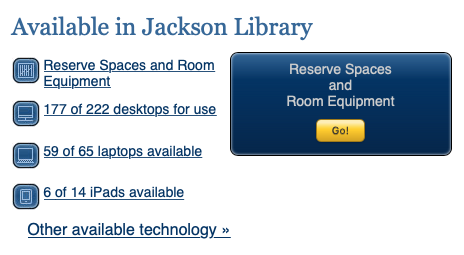

Today we will be examining the UNCG Jackson library website, found here. The homepage is simply laid out and the components are as follows:
The header at the top indicates that the Jackson library subsists under the greater umbrella of the University of North Carolina, Greensboro. It also has links to different websites that visitors may find useful. Under the header is a large search box that allows for easy searching for any item. There are links for:
To the right of the search box is another box offering aid to the online patron. The services it offers are options to chat with a librarian, research help, and assistance with locating an item.
Below these boxes is a bar with four links with drop-down menus offering information on the libraries and collections, services, spaces, and an about page.
Next on the page is a large box detail reservations.
From this box you can reserve rooms, equipment, or technology.

The next section down is broken into 3 boxes from left to right. The left most box is a spotlight section that highlights items of interest, the middle section is about blogs and social media, and the right box is for news and library events.
Below those three boxes is a list of other links that patrons might find useful.
Finally, there is an anchor that contains the contact info, address, and logo of UNCG.
The pages are primarily designed for use by students. Being a student, this is a highly helpful page as it is the hub for the whole of the digital library. However, I am a distance learner, so I don’t have any need for most of the links on the page that have to do with reserving equipment or spaces. The most used section by far is the search option, which allows me to look through the digital stacks in search of any information or resources that I may need. I have also used the “talk to a librarian” function, which is very useful.
This website was designed primarily for the on-campus user, but it retains a lot of functionality for distance learners. The components of this website contain everything that I have needed so far in my program.